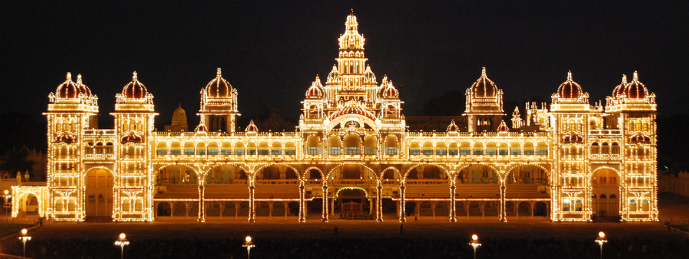

MYSURU PALACE ATTRACTIONS

Palace Attractions
- MAIN ENTRANCE & OLD PALACE MODEL OF MYSURU PALACE
- THE DOLLS' PAVILION- Display of Dolls during Dasara Festivities.
- ANE BAGILU OR ELEPHANT GATE
- GODDESS CHAMUNDI - Commonly known as Durga, Goddess Chamundeshwari
- GOLDEN THRONE - Golden Howdah
- PAINTING OF DASARA PROCESSION - Dasara Parade - Cannons & St. Philomena's
- KALYANA MANTAP - all royal weddings, birthdays and ceremonial functions
- PORTRAIT GALLERY - Many valuable paintings & Photographs of the Royal Family are exhibited
- CASKET ROOM - Many valuable gifts
- WRESTLING COURTYARD
- ROYAL FURNITURE
- PUBLIC DURBAR HALL
- THE WADIYAR DYNASTY
- SWAN CENTREPIECE - Public Durbar Hall
- HALLWAY OF DOORS - A Hallway of Doors is one of the most splendorous work of art in Mysuru Palace
- AMBA VILAS PALACE - Private Durbar
- ILLUMINATED MYSURU PALACE - Illumination on Government Holidays
- PALACE TEMPLES - Temples inside Mysuru Palace For